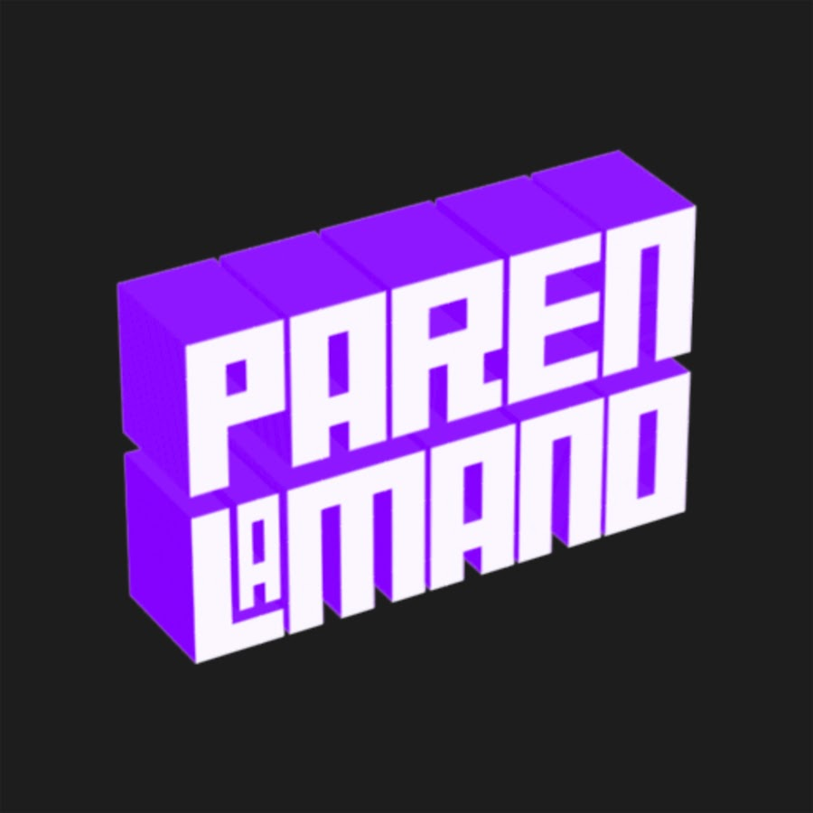

Acerca de este sitio
Este es un proyecto de fans, sin vínculo oficial con Paren la Mano, Vorterix ni sus integrantes. No alojamos ningún video: todos los que ves son los originales y oficiales, publicados en los canales de sus protagonistas, y se reproducen directamente desde YouTube.
Acá solo están ordenados cronológicamente para poder revivir cada evento de principio a fin —volver a esos días y recordar cómo se fueron dando las cosas.